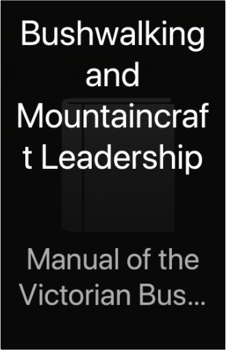

Bushwalking and Mountaincraft LeadershipManual of the Victorian Bushwalking and Mountaincraft Training Advisory Board   Collins Essential English DictionaryCollins Collins Essential English DictionaryCollins With colour entry words, Collins Essential English Dictionary is the perfect language tool for every situation. The helpful usage notes, and practical supplement created in partnership with Microsoft Office(t), makes this hardback dictionary ideal for office use. Specially tailored to meet the needs of the office user, the new colour Collins Essential English Dictionary has comprehensive definitions, word tips to provide extra help with English usage, and the newest words. With colour entry words, phrases, inflections, and derivatives, the clear accessible layout ensures users can find the language they need when they need it. Collins Essential Dictionary also includes an invaluable supplement developed with Microsoft(R) to help you get the most from your Microsoft(R) 2007 software. |


 Made with Delicious Library
Made with Delicious LibrarySpringfield, State zipflap congrotus delicious library Doddridge, Edward